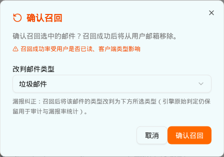

| 所属组件 | 2.3 日志表格 → 批量操作「召回」 |
| 主文件 | index.html#component-2-3 |
| 触发路径 | 层级2（选中 ≤10 封且含「投递成功」）→ 点击橙色「召回」按钮 |
确认召回选中的邮件？召回成功后将从用户邮箱移除。
召回成功率受用户是否已读、客户端类型影响
漏报纠正：召回后将该邮件的类型改判为下方所选类型（引擎原始判定仍保留用于审计与漏报率统计）。

| 元素 | 文案 | 说明 |
|---|---|---|
| 标题 | 确认召回（橙 + RotateCcw） | text-orange-600 |
| 描述 | 确认召回选中的邮件？召回成功后将从用户邮箱移除。 | — |
| 风险提示 | ⚠ 召回成功率受用户是否已读、客户端类型影响 | 常驻（不是 Tooltip），text-orange-600 text-xs |
| 改判下拉 | 默认「垃圾邮件」（漏报纠正） | 与放行弹窗默认值（「正常」）相反 |
| 说明文案 | 漏报纠正：召回后将该邮件的类型改判为下方所选类型（引擎原始判定仍保留用于审计与漏报率统计）。 | — |
| Footer | 取消 / 确认召回（橙填充） | 确认 → onRecallReclassify(ids, finalType) |
选中集合中 deliveryStatus === "delivered" 的邮件：
deliveryStatus → "recalled"（召回成功，绿色徽标）
finalType → 所选类型（默认 spam）
correctionSource→ "admin_recall"
⚠ demo 直接跳到终态，没有经过 "recalling"（召回中）过渡态，也没有失败分支| 比对项 | demo 实际 DOM | 提取的 HTML | 是否一致 |
|---|---|---|---|
| 根节点 | div[data-slot=dialog-content].sm:max-w-md | 同 | 一致 |
| 后代节点数 | 27（比放行多 6：风险提示行） | 27 | 一致 |
| 风险提示 | 常驻渲染（text-orange-600 + AlertTriangle 12px） | 同 | 一致 |
| Select 默认值 | 垃圾邮件 | 垃圾邮件 | 一致 |
| 选项数 | 12 | 12 | 一致 |